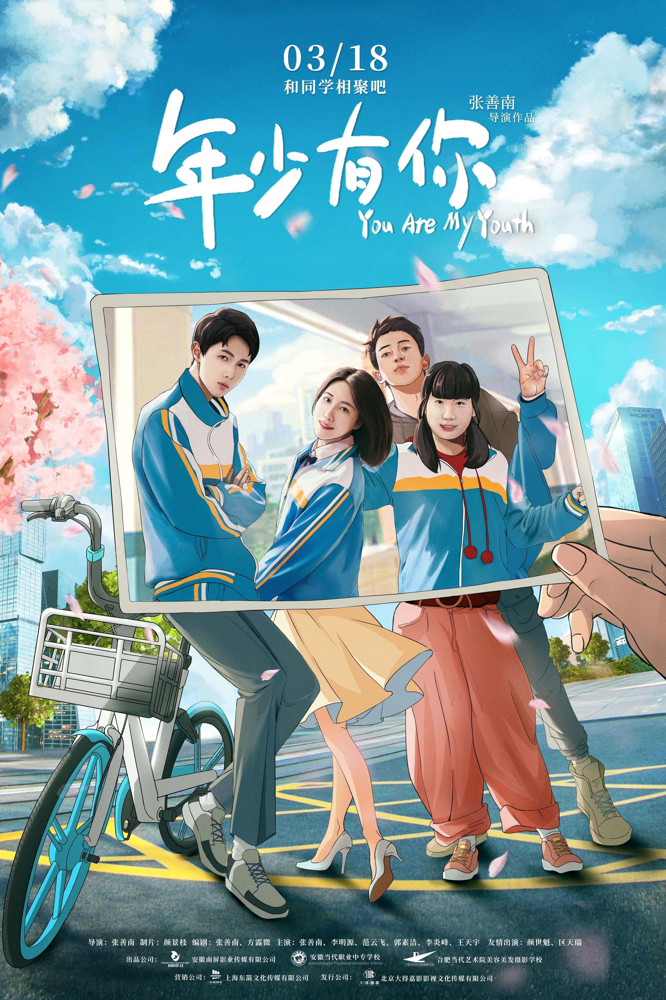
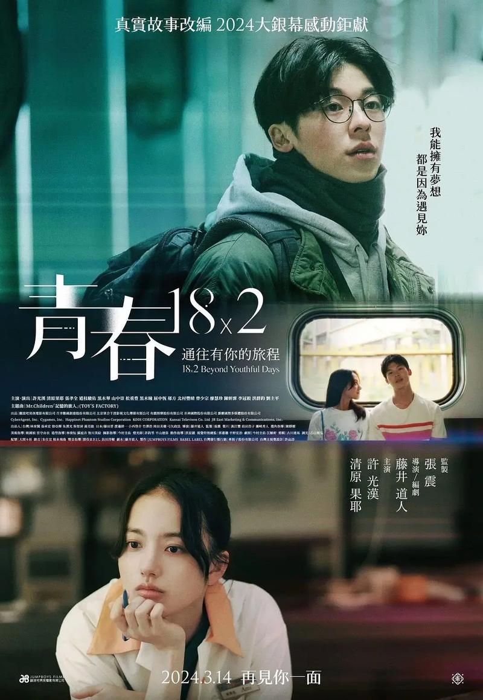

电影1
该片讲述了墨彩宁因转校生顾天琦的到来让她本来平静的生活发生了巨大转变，转眼到了寒假，大家树立了各自的人生目标，带着珍贵的友谊走向憧憬的未来的故事。

电影2
《青春18×2 通往有你的旅程》是一个再典型不过的男性青春故事，整部戏是讲一位中年男子对青春时代爱慕对象的回忆，所以在叙述视角上便先天沾染着男性自我美化的柔光，戏中的所有一切都像是在为塑造一位纯情男性服务，对他勇敢逐爱、青涩示爱、深沉悼爱的刻画可谓事无巨细。